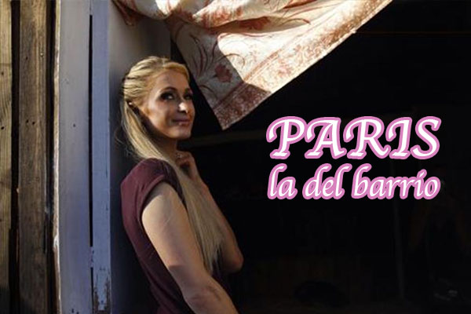

'La literatura es un credo al que hay que entregarse ciegamente'
El escritor rumano Mircea Cartarescu es la nueva sangre de la literatura europea.
Para Mircea Cartarescu la literatura es un credo al que hay que entregarse ciegamente, sin reparos. Hay que ser una especie de fanático capaz de encerrarse a leer durante días y semanas hasta bordear los límites de la esquizofrenia, como al mismo Cartarescu le ocurrió en su juventud, o tener la abnegación, como la tenían los monjes durante la Edad Media, de pasar muchas horas escribiendo hasta olvidarse del mundo terrenal; o creer que los libros son una especie de medio mágico para interpretar los sueños, para conocer el futuro o cambiar de sexo.
Su credo está en las letras, en la imaginación, en la fantasía o, como él mismo lo dijo en el discurso de recepción del Premio Formentor de las Letras, el pasado septiembre: “(...) Creo en aquellos para los cuales la escritura es una religión practicada con devoción, en soledad, en aras de la alegría personal y de la búsqueda de uno mismo, no una manera de adquirir un estatus social, notoriedad, dinero y gloria”. Y sin embargo, su compromiso no termina allí. Él cree que cada libro es una extensión de su cuerpo, un órgano vital que lo mantiene vivo. Tanto que si no escribe, el suicidio aparece en su cabeza como un fantasma.
Su nombre se ha vuelto uno de los inquilinos fijos en las quinielas para el Nobel de Literatura, algo que detesta y lo abruma. Cartarescu, de 62 años, preferiría nunca salir de su natal Bucarest que –al igual que Borges en su poema Fundación mítica de Buenos Aires– recrea y se inventa en cada uno de sus libros. Aunque, obligado por la fama, suele dejarla cada tanto.
Una de las influencias literarias que usted siempre ha mencionado ha sido la de los escritores latinoamericanos. De hecho, ha dicho que hay obras de García Márquez que sabe de memoria. ¿Cuál es la obra de García Márquez que más lo ha influenciado en su escritura? ¿Recuerda cuál fue el primer libro que leyó de él?
Siempre he vivido inmerso en una especie de campo literario, parecido en cierto modo a un campo magnético, lleno de fluctuaciones y perturbaciones. Todos los libros que he leído me han ‘influido’ a su manera, pero no sería capaz de determinar qué cambio concreto provocó cada uno de ellos, en qué compartimento de mi mente, a qué nivel y en qué aspecto concreto de mi vida o de mis libros. Nunca he aspirado ni he buscado escribir como García Márquez, aunque lo admiro profundamente, y en eso no soy diferente al resto de lectores. No creo que haya nadie que pueda imitarlo o analizarlo de forma crítica. Cien años de soledad es un libro de una perfección pura.
Leí este libro con unos veinte años, y cuando lo acabé estaba mudo. Sentía que no había nada que pudiera decir, o hacer, ante una obra así, como si me encontrara ante un brillante de enorme tamaño. Nadie puede dejarse influir por García Márquez sin perder su propia alma. Tienes que mantener cierta distancia, si no el agujero negro que provoca su lectura te devora vivo. Normalmente no son los grandes escritores los que influyen en otros escritores, sino más bien los de menor categoría (Dostoievski, por poner un caso, quería escribir como Alexandre Dumas…). Adoro todas y cada una de las explosiones de puro genio que aparecen en Cien años de soledad –los demás libros de García Márquez son libros más ‘normales’, algunos de ellos muy sofisticados, pero no milagros literarios–, aunque solo como lector. Su libro lleva unos cuantos días en mi escritorio. Me he propuesto releerlo después de cuarenta años. Me asusta un poco: ¿volverá la flor mística a abrir sus pétalos de nuevo?
“No escribiría una sola línea si la literatura no fuera mi religión”, dijo
en su discurso de la Feria del Libro de Madrid. Algo semejante repitió
al recibir el Formentor. ¿Qué tipo de religión es esta? ¿Cuáles son los dioses de esta religión?
¿Los escritores qué vendrían siendo?"
No creo que haya ‘tipos’ de religiones. La religión es solo una, y siempre implica que crees en algo más grande, más fuerte y más sabio que tú, algo para lo que tú eres relevante, ya sea Dios, la Realidad, la Naturaleza, tu propia mente, etc. Se puede comprender el vínculo religioso con una sencilla imagen: cuando eres un niño pequeño, tu madre te da la mano para cruzar la calle. La esencia de este vínculo es el amor. Con el escritor pasa lo mismo. Creo que todos los verdaderos escritores sienten que no están solos cuando escriben; sienten cierta influencia, una presencia a la que a veces llaman inspiración. Hay alguien más grande, más fuerte y más sabio que los lleva de la mano. A veces siento que solo soy un bolígrafo en la mano del verdadero escritor: mi incomprensible mente.
Feria del pan y chocolate, una oportunidad para disfrutar de gastronomía oaxaqueña
Pan de muerto tradicional horneado con azahares y flor de naranjo, chocolate de las tierras de Valles Centrales, así como postres y platillos que rinden honor a las tradiciones mexicanas se pueden disfrutar en la Feria del Pan y Chocolate que se realiza en el Jardín Carbajal.
Del 30 de octubre al 3 de noviembre, este espacio representa un punto de encuentro para disfrutar las tradicionales ofrendas por el Día de Muertos, así como de diferentes actividades culturales como representaciones musicales, teatrales, ensambles y danza.
En esta actividad, las y los participantes podrán convivir con panaderos de distintas comunidades, que se dieron cita para ofertar sus productos elaborados de manera artesanal y con el sabor que a cada uno de ellos caracteriza.
Asimismo, podrán disfrutar de una gran variedad de ambos productos de comunidades de los Valles Centrales como Santo Domingo Tomaltepec, Tlacolula y Zaachila, entre otras.
Al recorrer esta feria, el presidente municipal, José Antonio Hernández Fraguas, en compañía de la presidenta honoraria del DIF Municipal, Lorena Córdova Brena, expresó que al llevar a cabo estos eventos culturales se preservan las tradiciones de la entidad, se promueve la participación de la sociedad en general, además de darle promoción a los productos gastronómicos que se elaboran de forma artesanal en la capital.
Acompañado de la presidenta honoraria del DIF Estatal, Ivette Morán, y de la secretaria de Cultura, Adriana Aguilar Escobar, el edil capitalino disfrutó con oaxaqueños y visitantes nacionales e internacionales de estos alimentos característicos de la temporada.
Reinauguran velatorio
En este tenor, el edil capitalino y la presidenta honoraria del DIF Municipal acompañaron a la presidenta honoraria del DIF Estatal, Ivette Morán, a la reinauguración del Velatorio DIF Manuel Fernández Fiallo, ubicado en la calle de Murguía número 802, centro.
En esta actividad se realizó la develación de la placa conmemorativa de la capilla denominada “Cielo”, la cual cuenta con la donación de una obra del maestro plástico Amador Montes.
Este velatorio ofrece servicios funerarios de calidad a bajo costo con responsabilidad de ética, brindando atención las 24 horas los 365 días del año.
El “huracán de materia oscura” en la Vía Láctea: Uno de los mayores misterios por descubrir
Probar lo que no se ve ha sido siempre un desafío para los astrofísicos.
La materia oscura es uno de los fenómenos que más interés ha suscitado en la comunidad científica. Y ahora estamos ante una oportunidad única para poder detectarla, afirman los expertos.
La materia oscura es una entidad invisible, pero que los científicos creen que conforma un 80% del universo que nos rodea. Lo difícil es detectarla porque no emite radiación electromagnética (como la luz).
Hasta ahora solo puede afirmarse que está presente por el efecto gravitacional que tiene en otros elementos de materia visible tales como los astros, las galaxias o el fondo cósmico del universo.
Pero un vendaval de materia oscura en el que la Tierra está ahora mismo inmersa dará la oportunidad de hacerlo a través de multitud de experimentos que se están desarrollando a nivel global.
Y, con suerte, conocer más de lo que todavía es un misterio para la ciencia.
Un vendaval de materia oscura
Este vendaval fue detectado el año pasado gracias al telescopio Gaia y sus datos los ha recabado el investigador postdoctoral Ciran O’Hare, de la Universidad de Zaragoza (España), en un artículo que se publica esta semana en la revista científica Physical Review.
Nuestra galaxia, explica O’Hare a BBC Mundo, se encuentra ahora en medio de esta corriente estelar llamada S1 formada por los restos de una antigua galaxia que hace miles de millones de años devoró la propia Vía Láctea y que viaja a 500 km/s.
Y esto quizás haya ocurrido antes, pero nunca había podido detectarse.
“Es como si estuviéramos nadando en un mar de materia oscura en el que siempre se genera un cierto viento, pero la velocidad y la trayectoria que tiene esta corriente hace que el movimiento de la materia oscura sea muy rápido, creando lo que hemos llamado un huracán”.
O’Hare dice que no se puede predecir cuánto tiempo estaremos sumergidos en este mar, pero probablemente varios miles de años, estima el físico que espera “obtener información valiosa sobre la materia oscura en la próxima década”.
La esperanza es, de hecho, que esta enorme masa de materia oscura equivalente a la de diez mil millones de soles pueda ayudar a los científicos a probar lo que hasta ahora existe solo en la teoría gracias a varios experimentos de detección de materia oscura que intentan hacer visibles distintas partículas hasta ahora invisibles.
Una de ellas, y quizás las más importantes, son las partículas WIMP, uno de los que se cree son elementos fundamentales de la materia oscura, pero que tienen una interacción muy débil y por eso aún no ha podido probar su existencia más allá de en recreaciones con computadora.
Con la presencia del huracán se espera que se produzca un choque con otros átomos que pueda ser detectado por la tecnología que existe en los laboratorios y observatorios.
Si no resultaran ser WIMPS, explica O’Hare, también hay experimentos que intentan probar la presencia de axiones en la materia oscura, unas partículas muy ligeras que pueden convertirse en fotones de energía luminosa o electromagnética que puede ser producida, absorbida y transmitida.
En definitiva, lo que esperan los científicos de este huracán único en el que nos encontramos es conocer cuál es la partícula fundamental que compone la materia que nos rodea pero que no podemos ver.
¿Regresó? Juan Carlos Bodoque vuelve con “La Nota Verde”
Juan Carlos Bodoque, conocido personaje del programa infantil 31 minutos, está de regreso con su aporte al medio ambiente, pero esta vez bajo el alero de una campaña medio ambiental.
El conejo rojo de 31 minutos, Juan Carlos Bodoque, es quien protagoniza la nueva campaña del Ministerio del Medio Ambiente cuyo fin es concientizar acerca de la contaminación atmosférica en nuestro país.
Hoy se publicó en el Facebook oficial del ministerio, el primer capítulo de “La nube de humo”, la nueva Nota Verde de Juan Carlos Bodoque que “está cargada de chimeneas, fogatas y desengaño”.
¿Qué te parece? Pasan los años y Juan Carlos sigue con su periodismo agudo y tenaz.
AMLO reemplaza a Belinda con Paris Hilton como la nueva Reina Chaira
Por y para el pueblo, tipo y así
México.- Después de observar con detenimiento la llegada de Paris Hilton a México cercana a fiestas decembrinas, como Santa Claus, y cómo se involucró con la gente mientras se mostraba afectiva y repartió regalos, como Santa Claus, la gente de Morena le echó el ojo para reemplazar a la ya muy vista cantante Belinda.
Para ello, Andrés Manuel lanzó un comunicado donde invitaba a la magnate mujer de negocios a su proyecto de nación, mismo que requiere de una mujer rubia para llevar el mensaje a otras mujeres rubias con dinero para entregárselo a los menos afortunados.
“Andrés me quiere mucho pero ¡esto es inaceptable! Me voy, señor Obrador, pero no sin mi perdón en Hacienda”, confirmó la cantante de “Sapito”.
Al respecto, los representantes de Paris afirmaron que no tienen ningún interés en pertenecer a Morena, mucho menos a tomar la diputación que le ofrecieron, pues la señora Hilton tendría que tomar un Uber de Los Ángeles a la CDMX, mismo que ni ella podría pagar.
Por su parte, los representantes de Belinda piden regresar el tiempo atrás por todos esos abrazos, esos besos, todo esos conciertos invertidos para la gente sin pedir nada a cambio.

38 productos con cannabis ya pueden venderse libremente en México
La Cofepris autorizó la comercialización, exportación e importación de los productos que tienen hasta 1% del THC, componente psicotrópico de la cannabis.
La Comisión Federal para la Protección contra Riesgos Sanitarios (Cofepris) liberó el primer paquete de 38 productos con cannabis (mariguana) que podrán ser comercializados en México por empresas nacionales y extranjeras.
De este total, 21 son suplementos, nueve cosméticos, seis alimentos y dos materia prima.
El titular de la Cofepris, Julio Sánchez y Tépoz, precisó que a la fecha se recibieron 43 solicitudes, pero solamente 38 productos cumplieron los requisitos y serán comercializados, exportados o importados por siete empresas nacionales y extranjeras.
Las compañías con capital mexicano autorizadas son CBD Life, CBD Science, Endo Natural Labs y Farmacias Magistrales, además de Med Mex y Aceites Orgánicos de América (de capital estadunidense) y la española Finat México.
Los productos autorizados contienen concentraciones de hasta 1% o menos de THC, el componente psicotrópico de la mariguana.